Thực hành và nắm vững các thao tác cơ bản để quản lý tệp tin và thư mục trên hệ điều hành Windows — tạo, đổi tên, sao chép, di chuyển, xóa (tạm thời & vĩnh viễn) và khôi phục — nhằm tổ chức dữ liệu học tập một cách khoa học, có hệ thống và dễ truy xuất.
Mở File Explorer: nhấn tổ hợp phím Windows + E hoặc nhấp vào biểu tượng thư mục màu vàng trên thanh tác vụ.
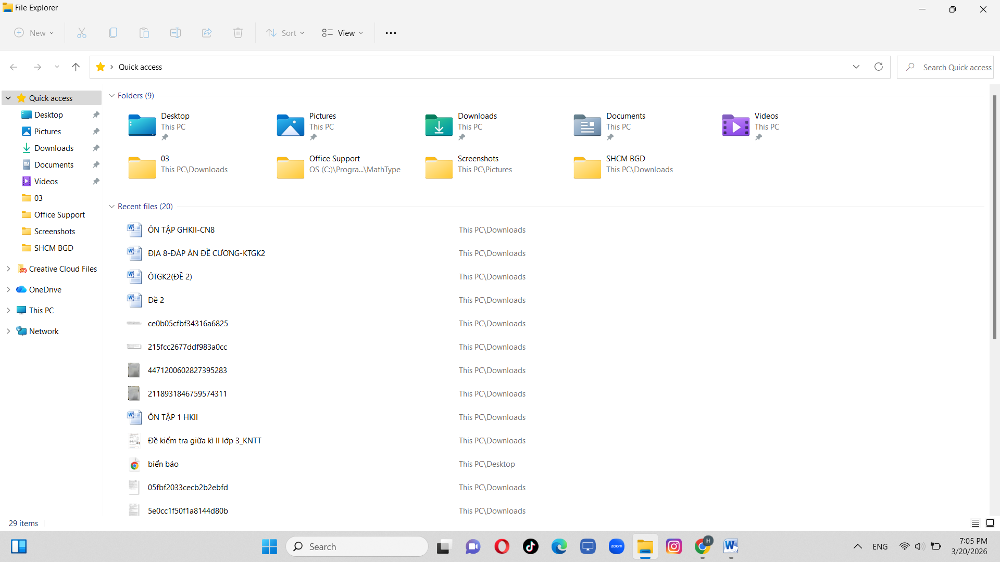
Truy cập ổ đĩa: ở cột bên trái nhấp This PC, rồi nhấp đúp vào một ổ không phải ổ hệ thống (ví dụ ổ D:). Nếu chỉ có ổ C: thì vào thư mục Documents.
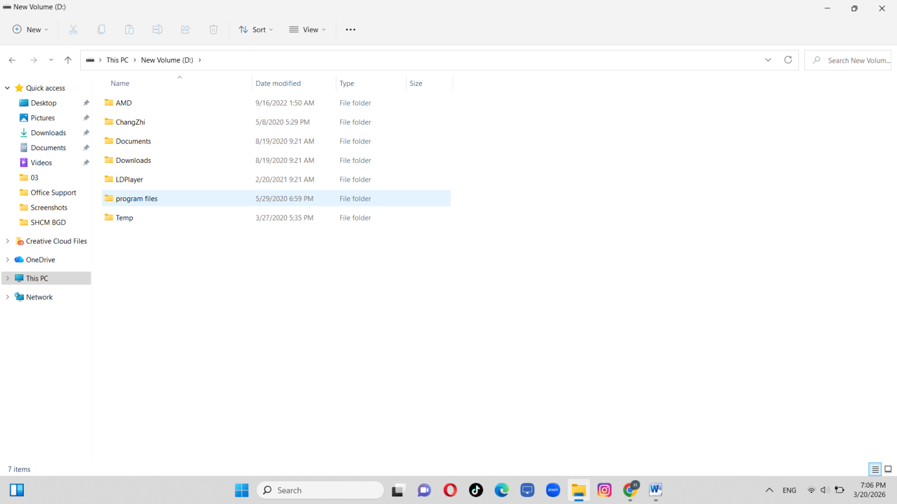
Tạo thư mục mới: nhấp chuột phải vào khoảng trống → New → Folder, đặt tên ThucHanh_LuongGiaHuy rồi nhấn Enter.
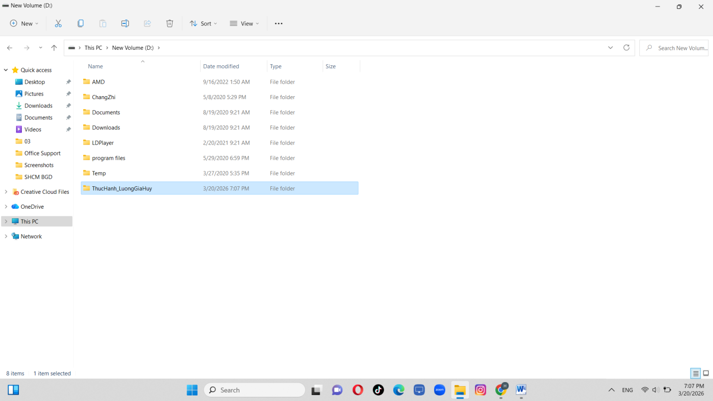
Vào thư mục vừa tạo: nhấp đúp vào thư mục ThucHanh_LuongGiaHuy.
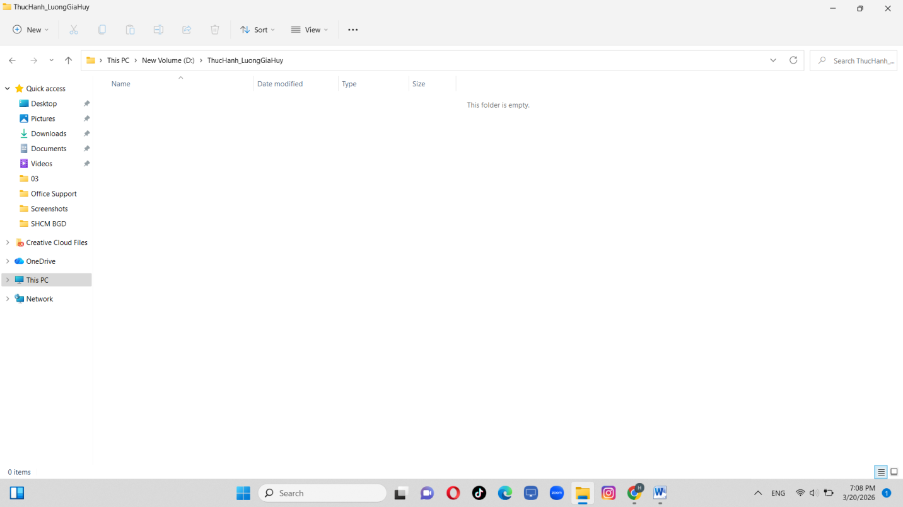
Tạo tệp văn bản: nhấp chuột phải vào khoảng trống → New → Text Document, đặt tên GhiChu.txt.
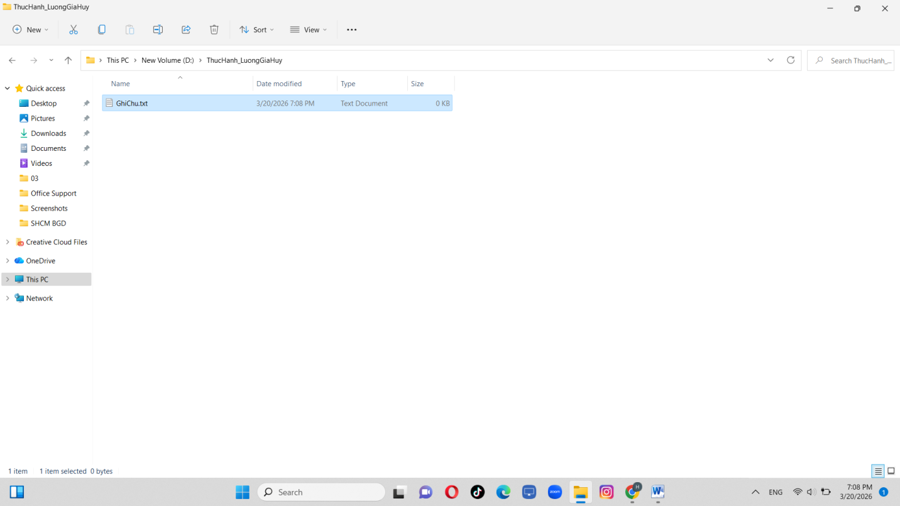
Đổi tên tệp: nhấp chuột phải vào GhiChu.txt → Rename, đổi thành GhiChuQuanTrong.txt.
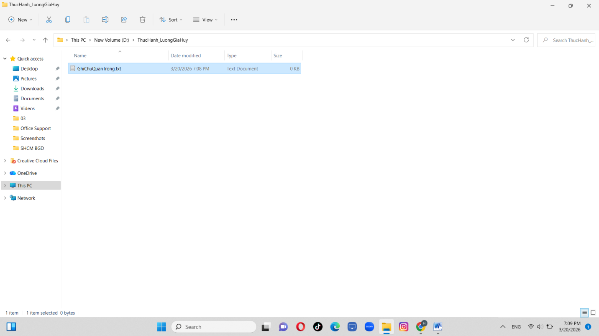
Tạo thư mục con: trong thư mục ThucHanh_LuongGiaHuy, nhấp chuột phải → New → Folder, đặt tên TaiLieu.
Sao chép tệp (Copy & Paste): nhấp chuột phải GhiChuQuanTrong.txt → Copy (Ctrl + C), vào thư mục TaiLieu rồi Paste (Ctrl + V) — có ngay một bản sao trong TaiLieu.
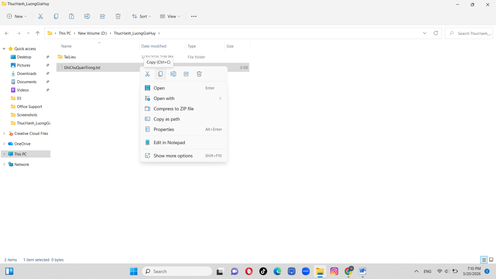
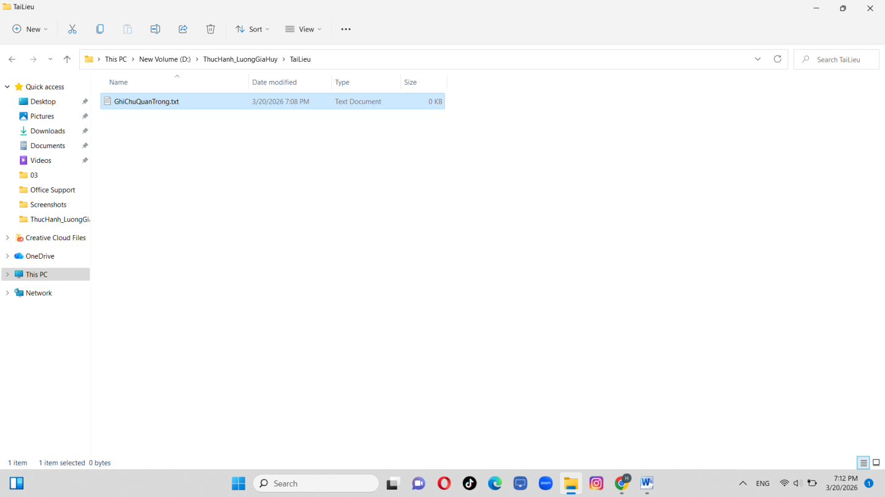
Di chuyển tệp (Cut & Paste): tại ThucHanh_LuongGiaHuy tạo tệp DiChuyen.txt, nhấp chuột phải → Cut (Ctrl + X), vào TaiLieu rồi Paste (Ctrl + V) — tệp gốc biến mất khỏi vị trí cũ.
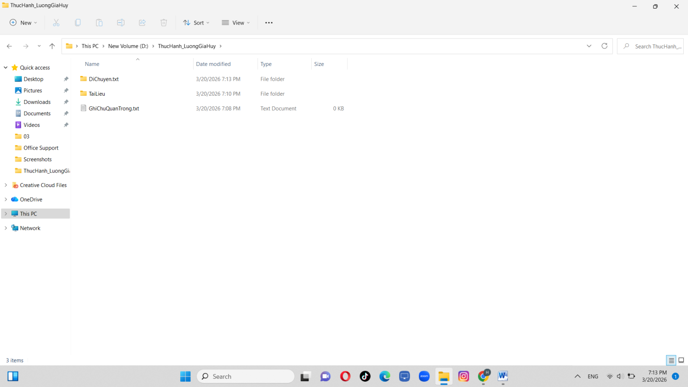
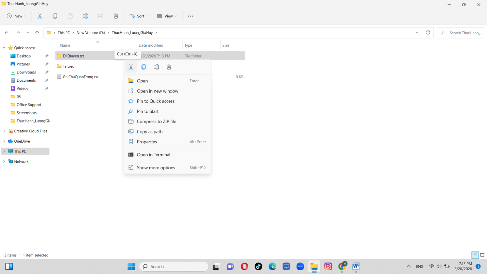
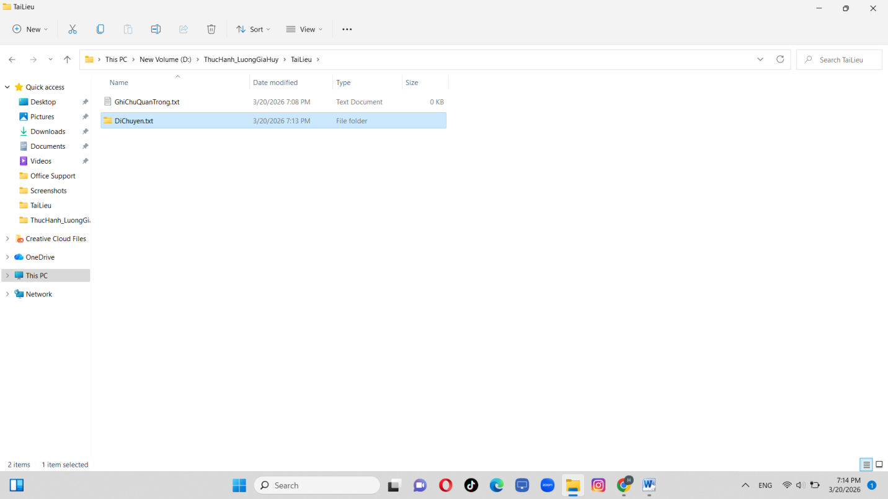
Xóa tệp: trong TaiLieu, nhấp chuột phải GhiChuQuanTrong.txt → Delete. Tệp được chuyển vào Recycle Bin (Thùng rác).
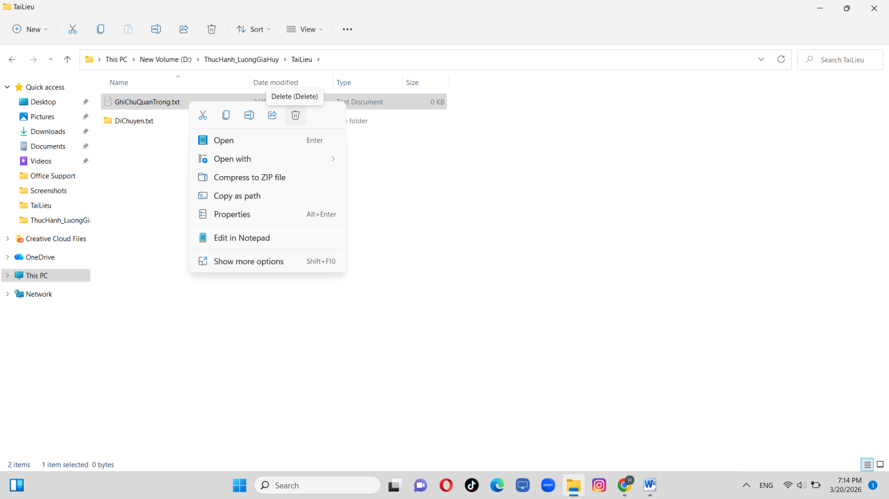
Xóa vĩnh viễn: chọn tệp DiChuyen.txt, nhấn giữ Shift + Delete — tệp bị xóa vĩnh viễn, không qua Thùng rác.
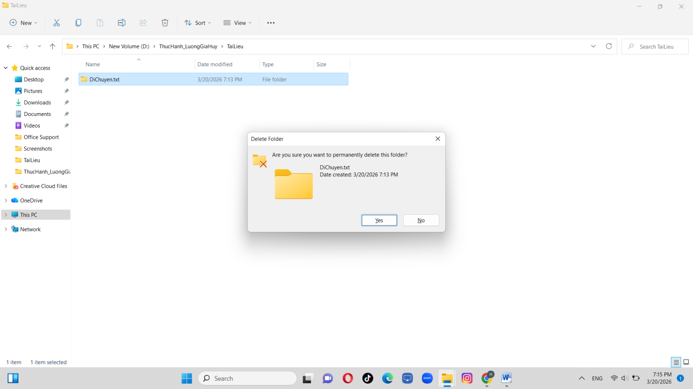
Khôi phục từ Thùng rác: mở Recycle Bin, tìm GhiChuQuanTrong.txt, nhấp chuột phải → Restore — tệp quay lại vị trí ban đầu.
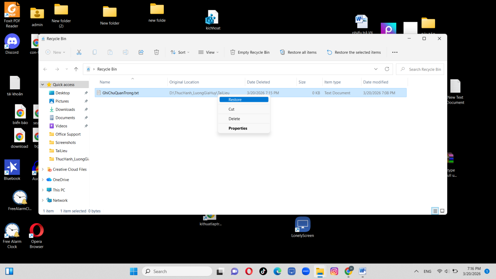
Rèn luyện kỹ năng tìm kiếm và đánh giá thông tin học thuật: xây dựng một danh mục tài liệu tham khảo đa dạng, đáng tin cậy cho chủ đề nghiên cứu, đồng thời đánh giá độ tin cậy của từng nguồn theo các tiêu chí khoa học (tác giả, phương pháp nghiên cứu, tính cập nhật).
Tác động của Trí tuệ nhân tạo (AI) đến hành vi người tiêu dùng trong lĩnh vực Thương mại điện tử tại Việt Nam.
| STT | Tên nguồn | Loại tài liệu | Tác giả / Đơn vị | Phương pháp nghiên cứu | Cập nhật | Xếp hạng |
|---|---|---|---|---|---|---|
| 1 | Journal of Interactive Marketing | Tạp chí quốc tế | Elsevier | Phân tích định lượng, mô hình cấu trúc tuyến tính | 2021 | Rất cao |
| 2 | Prediction Machines | Sách chuyên khảo | Harvard Business Review | Phân tích lý thuyết kinh tế học về chi phí dự báo | 2022 | Rất cao |
| 3 | Luận văn thạc sĩ | CSDL thư viện | Trường ĐH Kinh tế - ĐHQGHN | Khảo sát, phỏng vấn sâu tại Việt Nam | 2025 | Cao |
| 4 | Báo cáo VECOM 2024 | Nguồn Internet | Hiệp hội TMĐT Việt Nam | Thống kê dữ liệu thực tế từ doanh nghiệp (Shopee, Lazada) | 2024 | Cao |
| 5 | e-Conomy SEA 2024 | Nguồn Internet | Google & Bain & Co. | Dữ liệu lớn (Big Data) và phân tích xu hướng thị trường | 2024 | Rất cao |
Vận dụng kỹ thuật Prompt Engineering để giao tiếp hiệu quả với AI trong học tập — xây dựng, tối ưu và so sánh nhiều phiên bản prompt (cơ bản → cải tiến → nâng cao) cho các tác vụ học tập cụ thể, từ đó rút ra bộ nguyên tắc viết prompt hiệu quả.
"Tóm tắt bài đọc này cho tôi."
"Hãy đóng vai là một nhà phân tích kinh tế, nêu ra những ý chính của bài đọc này, cụ thể gồm: Mục tiêu chính, Phương pháp, Kết quả."
"Bạn là một học giả nghiên cứu chuyên sâu. Hãy đọc văn bản sau và thực hiện theo từng bước:
+ Xác định luận điểm chính của tác giả.
+ Liệt kê 3 dẫn chứng quan trọng nhất."
"Hãy giải thích hàm cầu là gì."
"Giải thích khái niệm hàm cầu cho một người mới bắt đầu học kinh tế, hãy sử dụng thêm những ví dụ thực tế."
"Hãy giải thích khái niệm độ co giãn của cầu theo giá bằng phương pháp so sánh.
Ví dụ:
+ Nếu giá tăng 10%, lượng cầu giảm 20% thì co giãn mạnh.
+ Nếu giá tăng 10%, lượng cầu giảm 2% thì ít co giãn.
Bây giờ, hãy áp dụng cách giải thích tương tự cho khái niệm hàm cầu sao cho người mới học cũng hiểu được."
"Hãy tạo 5 câu hỏi trắc nghiệm về môn Kinh tế vi mô."
"Tạo 5 câu hỏi trắc nghiệm có đáp án về chủ đề Cung - Cầu, các câu hỏi phải ở mức độ thông hiểu và vận dụng."
"Bạn là một giảng viên đại học. Hãy tạo bộ câu hỏi ôn tập gồm 5 câu trắc nghiệm có 4 đáp án dựa trên nội dung sau:
+ 2 câu mức độ nhận biết.
+ 2 câu mức độ phân tích tình huống.
+ 1 câu tính toán số liệu.
+ Định dạng đầu ra: Câu hỏi → Phương án A, B, C, D → Đáp án đúng → Giải thích chi tiết vì sao đáp án đó đúng."
| Tiêu chí | Prompt cơ bản | Prompt cải tiến | Prompt nâng cao |
|---|---|---|---|
| Độ chính xác | Trung bình, dễ lạc đề | Bám sát nội dung | Rất chính xác, đúng yêu cầu |
| Cấu trúc | Một đoạn văn dài | Chia các mục rõ ràng | Chuyên nghiệp, rõ ràng |
| Khả năng ứng dụng | Cần chỉnh sửa nhiều mới dùng được | Dùng được ngay cho mục đích cá nhân | Dùng được luôn làm tài liệu |
- Việc gán vai trò giúp AI giới hạn không gian tri thức phù hợp với yêu cầu.
- Việc yêu cầu AI suy nghĩ theo từng bước giúp đảm bảo không bỏ sót ý quan trọng.
- Việc đưa ra ví dụ mẫu giúp AI hiểu rõ định dạng và phong cách mà người dùng mong muốn.
Luôn bắt đầu bằng việc xác định AI là ai (chuyên gia, giảng viên…).
Cung cấp đủ thông tin nền và cho biết đối tượng người đọc là ai.
Dùng động từ mạnh, rõ ràng: Tóm tắt, Phân tích, So sánh…
Giới hạn độ dài, ngôn ngữ và định dạng đầu ra mong muốn.
Sử dụng và tối ưu hóa các công cụ hợp tác trực tuyến để lập kế hoạch, phân công, theo dõi tiến độ và phối hợp hiệu quả trong dự án nhóm — đồng thời nhận diện các thách thức khi làm việc nhóm số hóa và đề xuất giải pháp khắc phục.
- Board chung của nhóm & danh sách Task cá nhân công khai.
- Hệ thống Labels phân loại ưu tiên: 🔴 Khẩn cấp · 🟡 Đang làm · 🟢 Hoàn thành.
- Automation: nhắc hạn qua email trước 24h, tự chuyển thẻ sang "Done" khi đính kèm link minh chứng.
- File báo cáo tổng hợp trực tuyến, phân quyền cho giảng viên & thành viên.
- Dùng Document Outline + định dạng Heading rõ ràng để dễ di chuyển đến phần việc.
- Thư mục tổng của nhóm, phân rã thành thư mục cá nhân riêng biệt.
- Cấu trúc logic đa tầng, đặt tên file theo quy chuẩn, phân quyền truy cập chính xác.
- Chia nhỏ không gian giao tiếp thành các kênh chuyên biệt để luồng thông tin không bị loãng.
- Cấu trúc cây thư mục đa tầng theo logic dự án.
- Quy chuẩn đặt tên tệp tin nghiêm ngặt, thống nhất trong nhóm.
- Quyền truy cập nâng cao: hạn chế thư mục dữ liệu thô, chỉ trưởng nhóm được xem để tránh ghi đè hoặc xóa nhầm dữ liệu quan trọng.
Các thành viên có lịch học và đi làm thêm khác nhau, dẫn đến phản hồi thảo luận chậm trễ, ảnh hưởng các quyết định gấp.
Khi tag tên vào việc gấp phải nêu rõ thời hạn cần trả lời; thành viên có thể không trả lời ngay nhưng bắt buộc phản hồi trước thời hạn quy ước.
Khi 2–3 thành viên cùng sửa một đoạn trên Google Docs, ý tưởng dễ chồng chéo, cắt xén mất luận điểm của nhau.
Dùng chế độ đề xuất (Suggesting) thay vì sửa trực tiếp; mọi thay đổi chỉ áp dụng sau khi tác giả đoạn văn bấm "Chấp nhận".
Các kênh chat liên tục hiển thị thông báo không liên quan làm bản thân bị xao nhãng trong giờ làm việc cá nhân.
Phân loại lại quyền thông báo: tắt các kênh chung không thuộc trách nhiệm, chỉ bật thông báo đẩy với kênh khẩn.
Ứng dụng thành thạo & tối ưu các công cụ hợp tác trực tuyến giúp hoàn thành mục tiêu dự án nhóm đúng hạn, đồng thời xây dựng tư duy quản trị công việc khoa học trong môi trường số hóa.
Sử dụng công cụ AI tạo sinh để hỗ trợ xây dựng một sản phẩm nội dung số hoàn chỉnh — từ lên ý tưởng, dàn ý đến biên tập — đồng thời rèn kỹ năng trình bày nội dung một cách mạch lạc, trực quan và hấp dẫn.
Ứng dụng AI Chatbot trong kinh doanh online tại Việt Nam.
Kinh doanh online tại Việt Nam phát triển mạnh, đặc biệt trên Facebook, Shopee và TikTok Shop. Khi lượng khách tăng, người bán khó trả lời tin nhắn, tư vấn và chốt đơn nhanh chóng — vì vậy AI, đặc biệt là chatbot, trở thành công cụ quan trọng để giải quyết vấn đề này.
Vấn đề thực tế: tốc độ phản hồi là yếu tố sống còn, nhưng người bán không thể online 24/7 để trả lời hàng trăm tin nhắn mỗi ngày. Mâu thuẫn nảy sinh:
- Khách hàng cần phản hồi nhanh.
- Người bán bị giới hạn về thời gian & nhân lực.
AI chatbot là chương trình dùng trí tuệ nhân tạo để tự động trả lời tin nhắn khách hàng (ví dụ: ChatGPT, chatbot tích hợp trên Facebook Messenger). Cách hoạt động:
- Khách hàng gửi tin nhắn.
- AI phân tích nội dung câu hỏi.
- Đưa ra câu trả lời phù hợp dựa trên dữ liệu đã thiết lập.
Không chỉ trả lời, chatbot còn có thể tư vấn sản phẩm, gửi thông tin giá và hỗ trợ chốt đơn.
- Trả lời tự động 24/7: khách hỏi "Sản phẩm này còn không?" → chatbot trả lời ngay mà không cần người bán online.
- Tư vấn & gợi ý sản phẩm: đề xuất sản phẩm phù hợp, tăng khả năng bán hàng.
- Hỗ trợ chốt đơn: hướng dẫn khách cung cấp tên, địa chỉ, SĐT → xử lý đơn nhanh hơn.
Người bán nhập một yêu cầu, ví dụ: "Viết câu trả lời cho khách hỏi về áo thun mùa hè, giọng thân thiện." → AI tạo ngay một đoạn trả lời chuyên nghiệp, tiết kiệm thời gian soạn tin. AI không chỉ tự động hóa mà còn nâng cao chất lượng giao tiếp với khách hàng.
Lợi ích:
- Tiết kiệm chi phí nhân sự.
- Tăng tốc độ phản hồi khách hàng.
- Giúp bán hàng hiệu quả hơn.
Thách thức:
- Câu trả lời có thể thiếu tự nhiên, máy móc.
- Thiết lập không tốt dễ gây hiểu nhầm cho khách.
- Người bán dễ phụ thuộc quá nhiều vào AI.
→ Cần sử dụng AI một cách hợp lý, kết hợp với yếu tố con người.
AI chatbot đang trở thành công cụ quan trọng trong kinh doanh online tại Việt Nam — tiết kiệm thời gian, nâng cao hiệu quả bán hàng và trải nghiệm khách hàng. Trong tương lai, AI có thể trở thành một "nhân viên bán hàng số" không thể thiếu.
Xây dựng bộ nguyên tắc cá nhân về sử dụng AI có trách nhiệm, an toàn và tuân thủ liêm chính học thuật — dựa trên việc nghiên cứu chính sách của nhà trường, phân tích các vấn đề đạo đức và trải nghiệm thực tế khi dùng AI hỗ trợ học tập.
Trường ĐH Kinh tế - ĐHQGHN khuyến khích ứng dụng AI để nâng cao hiệu quả học tập, nhưng đặt ra ranh giới nghiêm ngặt về liêm chính học thuật:
- Công cụ hỗ trợ, không thay thế: AI chỉ là phương tiện gợi ý ý tưởng, cấu trúc; sinh viên chịu trách nhiệm cuối cùng về toàn bộ nội dung.
- Yêu cầu minh bạch: bắt buộc khai báo nếu dùng AI trong tiểu luận, NCKH hoặc khóa luận tốt nghiệp.
- Nghiêm cấm đạo văn do AI: copy nguyên văn kết quả AI mà không xử lý, kiểm chứng, trích dẫn bị coi là vi phạm nghiêm trọng, tương đương gian lận.
Chuẩn bị đề cương tổng quan & tài liệu tham khảo cho nghiên cứu "Tác động của AI đến hành vi người tiêu dùng trong TMĐT tại Việt Nam".
"Tôi là sinh viên ngành Kinh tế Quốc tế. Hãy đóng vai một chuyên gia nghiên cứu thị trường, gợi ý cho tôi khung cấu trúc chuẩn gồm 3 chương chính cho đề tài '…'. Bổ sung 3 từ khóa tiếng Anh quan trọng để tìm tài liệu học thuật."
Cấu trúc 3 chương (Cơ sở lý luận → Thực trạng ứng dụng AI trong TMĐT tại VN → Giải pháp & hàm ý chính sách) + từ khóa: AI in E-commerce, Consumer Behavior, Vietnam E-commerce market.
"Tóm tắt các giả thuyết chính của mô hình Chấp nhận công nghệ (TAM) khi áp dụng vào việc người tiêu dùng chấp nhận công nghệ AI."
Giải thích hai yếu tố cốt lõi: cảm nhận về sự hữu ích và cảm nhận về sự dễ sử dụng.
Tự suy nghĩ, lập dàn ý sơ bộ và tìm tài liệu chính thống trước khi mở AI. AI là trợ lý, bản thân là thuyền trưởng.
Không thừa nhận bất kỳ số liệu, định lý hay sự kiện nào do AI đưa ra khi chưa đối chiếu với nguồn uy tín.
Chủ động khai báo ở phụ lục hoặc lời mở đầu về phạm vi và công cụ AI đã sử dụng.
Không tải lên AI công cộng dữ liệu nội bộ chưa công bố, thông tin cá nhân hay tài liệu mật.
Chỉ dùng AI để hiểu sâu bản chất, không dùng AI làm thay bài tập nhằm đối phó lấy điểm.

"5 bước để trở thành trí thức số sử dụng AI thông minh" — tông màu đỏ & trắng của UEB
- Bước 1: Hỏi AI.
- Bước 2: Kiểm tra nguồn gốc thông tin.
- Bước 3: Viết lại bằng giọng văn của mình.
"Trí tuệ nhân tạo nâng bước – Trí tuệ con người dẫn đường."